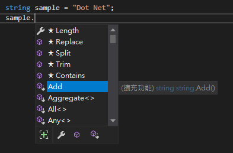

前言
在某些情況下若想延伸既有的方法，而無法繼承的情況下，就可使用擴展方法來達成小心願。舉例：字串延伸擴展方法
目錄
建立擴展的靜態類別和靜態方法，方法第一個參數為擴展類型，須加上關鍵字 this，而方法內回傳簡易的邏輯
1 | public static class StringExtend |
建立一個字串變數，在自動完成清單內查看字串變數，可以看到剛建立的擴展方法

執行未使用擴展方法和使用擴展方法
1 | Console.WriteLine(sample); |
查看結果
簡易的擴展方法成功！
再試試字串陣列，使用擴展方法來打印出陣列內容，建立擴展方法
1 | public static string Print(this string[] s) |
建立一個陣列，並打印內容
1 | string[] array = { "Dot", "Net", "Core" }; |
查看結果
結語
演示了兩個範例，擴展方法的好處慢慢浮現，但作為靜態類別還是有暫記憶體的嫌疑，目前有意在未來的專案作為基礎的使用，算是內功心法的一種(?)大概要注意的是複用的問題，複用性不高則不考慮使用擴展方法。
Reference
[C#][Visual Studio] 擴展方法 (Extend method)
Extension Methods (C# Programming Guide)